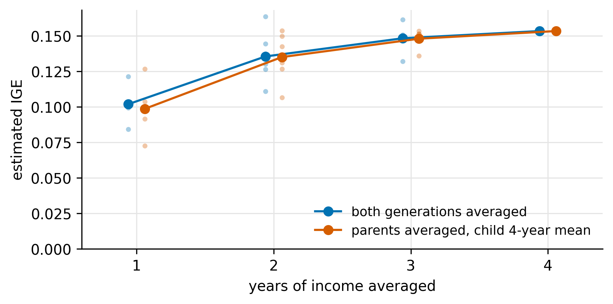
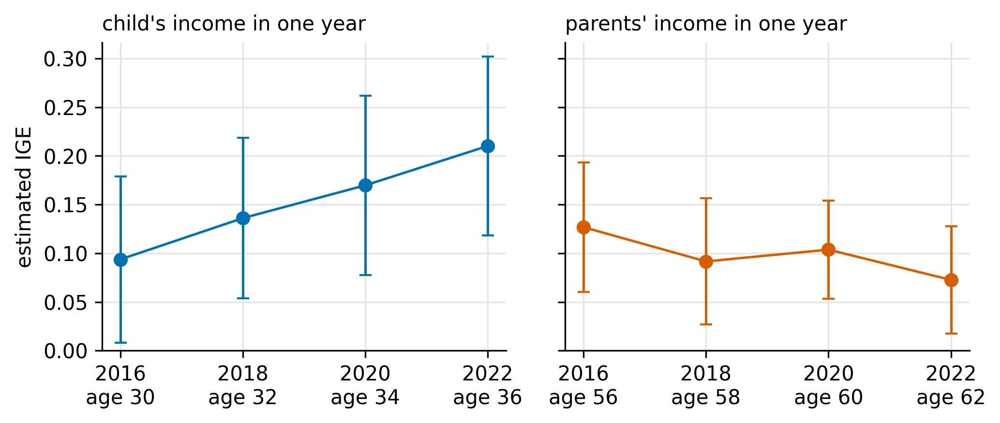

import sqlite3
from itertools import combinations
import numpy as np
import pandas as pd
import statsmodels.formula.api as smf
individuals = pd.read_csv("data/psid/individuals.csv")
person_year = (pd.wide_to_long(individuals, ["intnum", "seqno", "rel", "age"],
i=["id68", "pn"], j="survey_year", sep="_")
.reset_index())
con = sqlite3.connect(":memory:")
person_year.to_sql("person_year", con, index=False)
pd.read_csv("data/psid/family_income.csv").to_sql("family_income", con, index=False)
pd.read_csv("data/psid/parents.csv").to_sql("parents", con, index=False)
pd.read_csv("data/cpi_annual.csv").to_sql("cpi", con, index=False)
sql = lambda q: pd.read_sql(q, con) # queries that return a table
run = lambda q: con.executescript(q) and None # statements that create tablesMatching parents and children in the PSID with SQL
Linking two generations of PSID families, and why one year of income understates how much parents pass on
tutorial
SQL
Python
PSID
intergenerational mobility
Match PSID children to their parents with SQL in Python, estimate the intergenerational elasticity of income, and see how single-year income and the age at measurement move the estimate.
The intergenerational elasticity of income (IGE) is the slope from regressing children’s log income on their parents’ log income. An IGE of 0.4 means a child whose parents earned 10 percent more earns about 4 percent more as an adult. Estimating it requires putting parents’ and children’s income in the same row. This post does that for the Panel Study of Income Dynamics (PSID) with SQLite, through Python’s built-in sqlite3 module.
The data
The PSID has followed about 5,000 US families since 1968, and keeps interviewing their children once they form households of their own. Three downloads are used:
- the cross-year individual file (
ind2023er): one row per person, identified by the 1968 family numberER30001and person numberER30002, with the interview number, sequence number, relation to the reference person and age in each wave; - the Parent Identification File (
pid23): each person’s birth mother and father; - a Data Center family extract: labor income of the reference person (RP) and spouse in the 2017 to 2023 waves, which refers to calendar years 2016, 2018, 2020 and 2022.
py/01_prepare.py reads the needed columns from the 560 MB individual file and writes three small CSVs. PSID data cannot be redistributed, so none of these files are in the repository.
Step 1: load the tables
SQL works best on long tables, so the individual file is reshaped to one row per person per wave before loading.
Step 2: attach family income to people (SELECT, WHERE, JOIN)
In a family-only Data Center extract, row 5 in 2017 and row 5 in 2019 are different families: an interview number identifies a family only within one wave. The link across waves runs through people, because the individual file records which family each person lived in every wave. A JOIN on survey year and interview number attaches each person to their family’s income.
run("""
CREATE TABLE income AS
SELECT p.id68 * 1000 + p.pn AS person_id,
p.survey_year - 1 AS inc_year,
p.age - 1 AS age,
(f.rp_labor + f.sp_labor) * base.cpi / c.cpi AS fam_labor
FROM person_year AS p
JOIN family_income AS f ON f.survey_year = p.survey_year AND f.family_id = p.intnum
JOIN cpi AS c ON c.year = p.survey_year - 1
JOIN cpi AS base ON base.year = 2022
WHERE (p.rel = 10 AND p.seqno = 1) -- reference person
OR (p.rel IN (20, 22) AND p.seqno BETWEEN 1 AND 20); -- spouse or partner
""")
sql("SELECT * FROM income LIMIT 3")| person_id | inc_year | age | fam_labor | |
|---|---|---|---|---|
| 0 | 4006 | 2016 | 58 | 0.000000 |
| 1 | 4006 | 2018 | 60 | 0.000000 |
| 2 | 4007 | 2016 | 56 | 68277.977542 |
SELECT builds the output columns: a single person key from the two-part PSID ID, and family labor income (RP plus spouse) converted to 2022 dollars by joining the CPI table twice. WHERE keeps only reference persons and spouses, the people the family file records income for. An adult child still living at home (relation 30) drops out, so their parents’ income is never counted as theirs.
Step 3: link children to parents (UNION ALL)
The parent file has mother and father in separate columns. UNION ALL stacks two SELECTs into one long table of (child, parent) links.
run("""
CREATE TABLE links AS
SELECT id68 * 1000 + pn AS child_id, mother_id68 * 1000 + mother_pn AS parent_id
FROM parents WHERE mother_pn > 0
UNION ALL
SELECT id68 * 1000 + pn, father_id68 * 1000 + father_pn
FROM parents WHERE father_pn > 0;
""")Step 4: one row per child for each generation (GROUP BY)
Parents and children both live in income; links says who is whose parent. GROUP BY with aggregate functions collapses rows in two stages. First, average the two parents’ income in each year (the same number if they live together):
run("""
CREATE TABLE parent_year AS
SELECT l.child_id, i.inc_year, AVG(i.fam_labor) AS inc, AVG(i.age) AS age
FROM links AS l JOIN income AS i ON i.person_id = l.parent_id
GROUP BY l.child_id, i.inc_year;
""")Second, turn each person’s four years into one row. CASE returns NULL outside the chosen year and aggregates skip NULLs, so MAX(CASE ...) picks one year. HAVING filters after grouping: it keeps people with positive income in all four years, so every comparison below uses the same sample.
cols = lambda v: ",\n".join(
f"MAX(CASE WHEN inc_year = {y} THEN {v} END) AS y{y}" for y in (2016, 2018, 2020, 2022))
run(f"""
CREATE TABLE parent_inc AS
SELECT child_id, {cols('inc')}, AVG(inc) AS y_avg,
MAX(CASE WHEN inc_year = 2016 THEN age END) AS age16
FROM parent_year GROUP BY child_id
HAVING COUNT(*) = 4 AND MIN(inc) > 0;
CREATE TABLE child_inc AS
SELECT person_id AS child_id, {cols('fam_labor')}, AVG(fam_labor) AS y_avg,
MAX(CASE WHEN inc_year = 2016 THEN age END) AS age16
FROM income GROUP BY person_id
HAVING COUNT(*) = 4 AND MIN(fam_labor) > 0;
""")Step 5: the matched sample
An inner JOIN keeps only children found in both tables.
sample = sql("""
SELECT c.child_id / 1000 AS family68,
c.y2016 AS c2016, c.y2018 AS c2018, c.y2020 AS c2020, c.y2022 AS c2022,
c.y_avg AS c_avg, c.age16 AS c_age16,
p.y2016 AS p2016, p.y2018 AS p2018, p.y2020 AS p2020, p.y2022 AS p2022,
p.y_avg AS p_avg, p.age16 AS p_age16
FROM child_inc AS c JOIN parent_inc AS p ON p.child_id = c.child_id
""")
pd.DataFrame({"mean age in 2016": [sample.c_age16.mean(), sample.p_age16.mean()],
"median 4-year income (2022 $)": [sample.c_avg.median(), sample.p_avg.median()]},
index=["children", "parents"]).round(0)| mean age in 2016 | median 4-year income (2022 $) | |
|---|---|---|
| children | 30.0 | 75082.0 |
| parents | 56.0 | 66352.0 |
This gives 1,012 pairs from 546 original 1968 families. Standard errors below are clustered on the 1968 family because siblings share parents.
Step 6: one year of income versus several
def ige(df, child, parent):
d = pd.DataFrame({"y": np.log(df[child]), "x": np.log(df[parent]), "g": df.family68})
fit = smf.ols("y ~ x", d).fit(cov_type="cluster", cov_kwds={"groups": d.g})
return fit.params["x"], fit.bse["x"]
years, rows = [2016, 2018, 2020, 2022], []
for k in range(1, 5):
for combo in combinations(years, k):
s = sample.assign(p_k=sample[[f"p{y}" for y in combo]].mean(axis=1),
c_k=sample[[f"c{y}" for y in combo]].mean(axis=1))
rows.append({"k": k, "both": ige(s, "c_k", "p_k")[0],
"parents_only": ige(s, "c_avg", "p_k")[0]})
combos = pd.DataFrame(rows)
by_k = combos.groupby("k").mean()For each \(k\), the loop averages income over every set of \(k\) of the four years, for both generations (both) or for parents only with the child’s four-year mean fixed (parents_only).
Code
fig, ax = plt.subplots(figsize=(6.5, 3.0))
for col, color, label, dx in [("both", BLUE, "both generations averaged", -0.06),
("parents_only", ORANGE, "parents averaged, child 4-year mean", 0.06)]:
ax.scatter(combos.k + dx, combos[col], s=12, color=color, alpha=0.35, lw=0)
ax.plot(by_k.index + dx, by_k[col], "o-", color=color, ms=6, lw=1.5, label=label)
ax.legend(frameon=False, loc="lower right", fontsize=9)
ax.set_xticks(range(1, 5)); ax.set_xlim(0.6, 4.4); ax.set_ylim(0, None)
ax.set_xlabel("years of income averaged"); ax.set_ylabel("estimated IGE")
plt.show()
One year of income gives an IGE of 0.10; the four-year average gives 0.15. A single year is long-run income \(x^*\) plus a transitory shock \(v_t\) (a layoff, a bonus, a year of part-time work). Using \(x_t = x^* + v_t\) as the regressor gives
\[ \operatorname{plim}\hat\beta = \beta \cdot \frac{\operatorname{Var}(x^*)}{\operatorname{Var}(x^*) + \operatorname{Var}(v_t)} < \beta . \]
Averaging over several years shrinks the variance of the shock and moves the ratio toward 1. The shocks here are large: log parental income in 2016 and 2022 correlates at only 0.53. The two lines in Figure 1 nearly coincide, so the gain comes from averaging the parents’ income. Error in the child’s income, the dependent variable, adds noise but no bias.
Step 7: life-cycle bias
People with high lifetime incomes tend to start slowly and pull ahead in their thirties and forties, so income measured early in a career compresses lifetime differences. Late in a career, retirement and cuts in hours distort it again. Holding the sample fixed, we can move the year in which one generation’s income is measured:
Code
child_path = [ige(sample, f"c{y}", "p_avg") for y in years]
parent_path = [ige(sample, "c_avg", f"p{y}") for y in years]
fig, axes = plt.subplots(1, 2, figsize=(7, 3.0), sharey=True)
for ax, path, color, base, title in [
(axes[0], child_path, BLUE, sample.c_age16.mean(), "child's income in one year"),
(axes[1], parent_path, ORANGE, sample.p_age16.mean(), "parents' income in one year")]:
est, se = np.array(path).T
ax.errorbar(years, est, yerr=1.96 * se, fmt="o-", color=color, capsize=3, lw=1.2)
ax.set_xticks(years, [f"{y}\nage {base + y - 2016:.0f}" for y in years])
ax.set_title(title, fontsize=10, loc="left")
axes[0].set_ylabel("estimated IGE"); axes[0].set_ylim(0, None)
plt.tight_layout(); plt.show()
The same children measured at about 30 give an IGE of 0.09, and at about 36 give 0.21. Only the child’s age changed. On the parents’ side the pattern reverses: 0.13 at about 56 and 0.07 at about 62, as parents head into retirement. Haider and Solon (2006) find that current earnings track lifetime earnings best from the early thirties to the mid-forties.
Why averaging helps, and its limits
Transitory shocks are mostly unrelated to long-run income, so they partly cancel in an average, and a multi-year average is closer to long-run status than any single year. Solon (1992) showed that earlier US estimates of about 0.2 were biased down this way and found about 0.4 with five-year averages in the PSID; Mazumder (2005), averaging up to 16 years, found about 0.6. Averaging cannot fix life-cycle bias if every year comes from the wrong age, so the best measure averages several years in mid-career for both generations.
That explains why the estimates here are well below the literature: this extract measures parents late in their careers and children early in their careers, over only four survey years. Adding earlier family-file waves to the extract would let the same SQL measure parents while their children were growing up.
References
Haider, Steven, and Gary Solon. 2006. “Life-Cycle Variation in the Association between Current and Lifetime Earnings.” American Economic Review 96 (4): 1308-1320.
Mazumder, Bhashkar. 2005. “Fortunate Sons: New Estimates of Intergenerational Mobility in the United States Using Social Security Earnings Data.” Review of Economics and Statistics 87 (2): 235-255.
Solon, Gary. 1992. “Intergenerational Income Mobility in the United States.” American Economic Review 82 (3): 393-408.